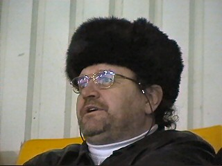

|
Roda JC - Ajax (1-2) 21 januari 2004 |

Het was koud in het PLS !!
Voor een doordeweekse dag viel de opkomst
van 600 Ajacieden nog mee.
Gele hartjes dwarrelden door de lucht op zuid.
Na dik 10 minuten overwicht voor Ajax was daar
opeens Anastasiou die 1-0 binnenschoot (14').

Deze keer kwam het vuurwerk eens niet van
Ajax. Hier enkele pyro's op west.
Senden en Soetaers.
Arbiter Jol was de slechtste man van het veld.
Met name in de eerste helft werd Roda keer op
keer benadeeld.
Pffff wat heb jij een slechte opvoeding gehad :-(
Ontdooien op de plee.
Na de rust zeilden grote doeken van Roda- en
Mechelensupporters over de westtribune.
Bal op de lat, nadat Sikora even hiervoor in de
48e min. 1-1 scoorde.
Een van de weinige goede acties van Jol.
Uitgerekend Soetaers scoort 1-2 (62').
Meedoen is belangrijker dan verliezen dus gaat
de verbroedering met de KVM-fans gewoon zijn
gangetje.
Dit meisje moest op de foto van beide heren.
Een echte koempel, 61 jaar en voor het laatst
ondergronds in de Sophia.
Kick-Off die-hards.
Valt tegen zonder flitser.....
Meer foto's op ajaxfotoside.nl
© Koempels
Pleasure Dome